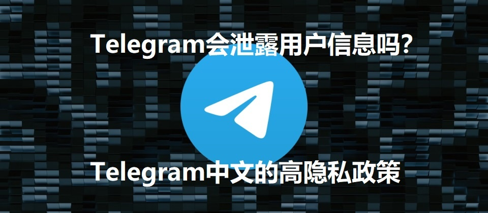

Telegram中文版本身是安全的，只要是从官方渠道（如Telegram官网或官方应用商店）下载的版本，均采用与国际版相同的加密技术和隐私保护措施。然而，某些第三方修改版可能存在安全风险，建议避免使用，以确保个人数据不被泄露或篡改。

Telegram下载的文件默认存储在设备的“下载”文件夹中。安卓设备通常保存在“内部存储”或“SD卡”的“Do […]
在Telegram中，无法完全禁止截图功能。不过，可以通过启用“秘密聊天”来增加安全性。在秘密聊天中，消息是加 […]
电报（Telegram）可以多开。用户可以在同一设备上同时运行多个Telegram账号，通过切换账号功能管理不 […]
在Telegram中，敏感内容通常会被标记并隐藏，用户需要手动点击“显示”才能查看。此功能通常适用于暴力、色情 […]